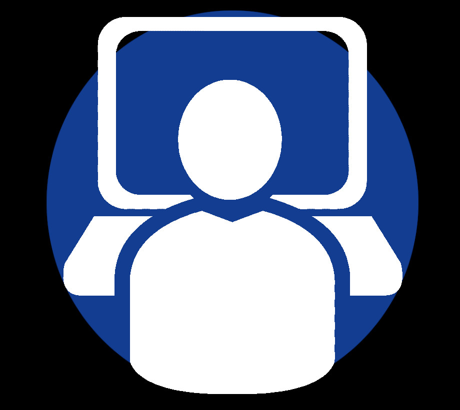

-
Accesibilidad web: concepto y objetivos
La accesibilidad hace referencia a la práctica de hacer que un sitio web sea utilizable por el mayor número de personas posible. Tradicionalmente pensamos que se dirige a personas con discapacidades, pero la práctica de hacer que los sitios sean accesibles también beneficia a otros grupos, como los que utilizan dispositivos móviles o los que tienen conexiones de red lentas.
La Web es un recurso cada vez más importante en muchos aspectos de la vida: educación, empleo, gobierno, comercio, atención sanitaria, ocio y mucho más. Es esencial que la Web sea accesible para ofrecer igualdad de acceso y oportunidades a personas con diversas capacidades.
El diseño accesible mejora la experiencia y la satisfacción del usuario en general, especialmente en una variedad de situaciones (diferentes dispositivos, usuarios con discapacidad, de mayor edad, etc.). La accesibilidad puede mejorar tu marca, impulsar la innovación y ampliar tu alcance en el mercado. -
Limitaciones de acceso a la web
Hay distintas formas en que las personas pueden estar limitadas en el uso de la Web. Está la discapacidad visual, que incluye la ceguera total, así como la visión parcial, el daltonismo, la visión borrosa y otros problemas.
En realidad, el ojo es un órgano delicado, capaz de provocar muchos problemas inusuales cuando se sale de la configuración normal. Dependemos tanto de la visión para interactuar con los ordenadores, que es posible que nunca te hayas planteado lo que supone utilizar uno si tu visión fuera más limitada.
Luego tienes una discapacidad auditiva, como la sordera total, rangos limitados de audición y también la pérdida de procesamiento central, que es cuando oyes los sonidos bien pero tu cerebro no es tan bueno para resolverlos en los significados del lenguaje. Aquí es donde los subtítulos de los vídeos y las transcripciones de audio son muy importantes.
También hay que tener en cuenta las limitaciones en la capacidad de alguien para interactuar con eventos cronometrados, las limitaciones en su capacidad para utilizar un ratón, los problemas cerebrales como la dislexia que pueden dificultar la entrada. Incluso las personas con capacidades normales pueden encontrar difícil el uso de un slider.
Por otra parte, el visionado de una web seguramente varía dependiendo del dispositivo que se utilice, por lo que se hace necesario encontrar una solución a este problema. -
Consorcio World Wide Web: definición, estructura y objetivos
World Wide Web Consortium (W3C) es una organización internacional comprometida con la mejora de la Web. Está formada por varios centenares de organizaciones miembros de diversos sectores de la informática.
W3C establece normas para la World Wide Web (WWW) con el fin de facilitar la interoperabilidad y la cooperación entre todas las partes interesadas en la web. Fue creado en 1994 por el creador de la WWW, Tim Berners-Lee. La misión del W3C es llevar la Web a su máximo potencial mediante el desarrollo de los protocolos y las directrices pertinentes.
Esto se consigue principalmente mediante la creación y publicación de estándares web. Al adoptar los estándares web creados por W3C, los fabricantes de hardware y los desarrolladores de software pueden garantizar que sus equipos y programas funcionen con las últimas tecnologías web. Por ejemplo, la mayoría de los navegadores web incorporan varios estándares de W3C, lo que les permite interpretar las últimas versiones del código HTML y CSS.
Cuando los navegadores se ajustan a las normas de W3C, también ayudan a que las páginas web aparezcan de forma coherente en los distintos navegadores. Además de las normas HTML y CSS, W3C también proporciona normas para los recursos gráficos (como imágenes en formato PNG), así como para el audio y el vídeo en la web. -
Evolución de la web: la Web 1.0
La primera versión de la web. También conocida como web sintáctica o web de sólo lectura, es la era (1990-2000) en la que el papel del usuario se limita a leer la información proporcionada por los productores de contenidos. El usuario o consumidor no tiene la opción de comunicar la información a los productores de contenidos. Un ejemplo de la Web 1.0 son los sitios web estáticos y los sitios personales.
-
Evolución de la web: la Web 2.0
La Web 2.0, también conocida como web social o web de lectura y escritura, es la era (2000-2010 y aún hoy en día) en la que se facilita la interacción entre los usuarios de la web y los sitios permiten a los usuarios comunicarse con otros usuarios. En esta era, todos los usuarios pueden ser productores de contenidos y éstos se distribuyen y comparten entre los sitios.
Algunas de las famosas aplicaciones de la Web 2.0 son Facebook, Youtube, Flickr, Twitter, etc. Las tecnologías web como HTML5, CSS3 y los frameworks de Javascript como ReactJs, AngularJs, VueJs, etc. permiten a las startups innovar con ideas que permiten a los usuarios contribuir má. La Web 2.0 se construye en torno a los usuarios, el productor sólo necesita idear una forma de involucrarlos. -
Evolución de la web: la Web 3.0
La Web 3.0, también conocida como web Semántica o web de lectura-escrituraejecución, es la era (a partir de 2010) que refiere al futuro de la web. En esta era los ordenadores pueden interpretar la información como los humanos a través de la inteligencia artificial y el aprendizaje automático, lo que ayuda a generar y distribuir inteligentemente contenidos útiles adaptados a una necesidad particular de un usuario.
¿Y si los ordenadores pueden entender el significado de la información? ¿Y si pueden aprender "lo que nos interesa"? Entonces pueden ayudarnos a encontrar lo que queremos. Puede reconocer personas, lugares, eventos, empresas, productos, películas, etc. Puede entender la relación entre las cosas. Algunos ejemplos de la web 3.0 son Siri de Apple, la API de Google Cloud o Wolfram Alpha -
Pautas de accesibilidad para el diseño web: versión WCAG 1.0
Las Pautas de Accesibilidad al Contenido en la Web (WCAG) se desarrollan a través de W3C en cooperación con individuos y organizaciones de todo el mundo, con el objetivo de proporcionar un único estándar compartido para la accesibilidad al contenido en la web que satisfaga las necesidades de individuos, organizaciones y gobiernos a nivel internacional.
Estos documentos explican cómo hacer accesibles a personas con discapacidades las páginas web. La versión 1.0 data del 5 de mayo de 1999, y fue sustituida por la versión 2.0 en junio de 2008. Las WCAG 1.0 se organizan en torno a directrices que tienen checkpoints de prioridad 1, 2 o 3. La base para determinar la conformidad con las WCAG 1.0 son estos puntos de control. -
Niveles de prioridad de las pautas WCAG 1.0
Cada punto de control tiene un nivel de prioridad asignado en función de su impacto en la accesibilidad.
Prioridad 1. Un desarrollador de contenidos web debe satisfacer este punto de control. De lo contrario, a uno o varios grupos les resultará imposible acceder a la información del documento. Satisfacer este punto de control es un requisito básico para que algunos grupos puedan utilizar los documentos web.
Prioridad 2. El desarrollador de contenidos web debe satisfacer este punto de control. De lo contrario, uno o varios grupos tendrán dificultades para acceder a la información del documento. La satisfacción de este punto de control eliminará importantes barreras de acceso a los documentos web.
Prioridad 3. Un desarrollador de contenidos web puede abordar este punto de control. En caso contrario, uno o varios grupos encontrarán cierta dificultad para acceder a la información del documento. La satisfacción de este punto de control mejorará el acceso a los documentos web. -
Versión WCAG 2.0
Las WCAG 2.0 se aplican de forma más amplia a diferentes tipos de tecnologías web y a tecnologías más avanzadas. Está diseñada para aplicarse a medida que las tecnologías se desarrollen en el futuro.
Los requisitos de las WCAG 2.0 pueden comprobarse con mayor precisión mediante pruebas automatizadas y evaluaciones humanas. Esto permite que las WCAG 2.0 se utilicen con mayor facilidad en aquellos casos en los que son necesarios requisitos específicos y pruebas de conformidad, como en las especificaciones de diseño, compras, normativas y acuerdos contractuales. -
Niveles de prioridad de las pautas WCAG 2.0
Las WCAG 2.0 se organizan en torno a cuatro principios de diseño de la accesibilidad web. Cada principio tiene unas pautas y cada pauta tiene unos criterios de éxito comprobables (nivel A, AA o AAA). La base para determinar la conformidad con las WCAG 2.0 son los criterios de éxito.
-
Consejos para crear una web accesible
La accesibilidad es, como hemos visto, un tema amplio que abarca multitud de aspectos de la página web. A la hora de hacer nuestra página web, debemos tenerla en cuenta. Algunos consejos sobre esto son:
Añadir texto alternativo a las imágenes Sirve de reemplazo en caso de que la imagen no cargue. Además, da información adicional a los motores de búsqueda.
Elegir con cuidado los colores Lo más importante es asegurarse de que el texto destaque sobre el fondo. Lo ideal es colocar un color oscuro frente a uno claro, asegurándose de que no se mezclen.
Habilitar texto de tamaño adaptable para no romper tu sitio web La mayoría de los dispositivos y navegadores permiten a los usuarios cambiar el tamaño del texto, lo que puede ser útil para las personas con problemas de visión. Sin embargo, si no construyes tu sitio para que sea compatible con esta función, el cambio de tamaño del texto podría romper el diseño o dificultar la interacción con tu sitio.
Utiliza cabeceras para estructurar tu contenido correctamente. Utilizando cuidadosamente los encabezados, el contenido será mucho más fácil de entender y digerir y mejorará la fluidez. Además, los encabezados claros también ayudan a los lectores de pantalla a interpretar sus páginas.
Crear contenido con la accesibilidad en mente Esto significa prestar atención a cosas relativamente menores, como escribir siempre completamente los acrónimos, hasta puntos más importantes, como asegurarse de dar a todos sus enlaces nombres y textos de anclaje únicos y descriptivos. -
Herramientas de evaluación automática
Las pruebas de accesibilidad son un tipo de prueba que se realiza para garantizar que una aplicación puede ser utilizada por el mayor número de personas posible. Las pruebas de accesibilidad automatizadas las realiza un programa externo y ayudan a agilizar el ciclo de lanzamiento y a identificar los problemas con antelación.
Algunas herramientas con este mismo propósito son:
DYNO Mapper. Es un generador de mapas de sitio que comprueba la accesibilidad web de los sitios y aplicaciones en línea. Los resultados se muestran en mapas de sitio visuales que permiten descubrir y planificar proyectos de forma fácil y eficaz.
AATT. Es un producto de Amazon. Esta plataforma proporciona una API de accesibilidad, así como otras aplicaciones web personalizadas para HTML CodeSniffer (un programa que analiza tu código HTML en busca de violaciones de estándares de código a corregir).
Accessibility Checklist. Es un programa de Elsevier que ofrece una forma fácil y gratuita de revisar las directrices de accesibilidad web más recientes y relevantes. Los usuarios pueden filtrar las directrices por temas, entre los que se incluyen el teclado, las imágenes y los formularios. Otra opción de filtro incluye el filtrado por niveles de norma, incluyendo A, AA o AAA. -
Herramientas de evaluación manuales
Las pruebas de accesibilidad manuales son el proceso de inspeccionar el sitio web o la aplicación a mano para comprobar si hay problemas de accesibilidad que puedan causar un problema a los usuarios con discapacidad.
Este tipo de prueba es fundamental para detectar problemas que no se pueden detectar con una prueba automatizada. Algunos ejemplos de este tipo de evaluación son probar el sitio web con un lector de pantalla para asegurarse de que es coherente al ser leído o navegar por la web solo con teclado para asegurarse de que el contenido es accesible.